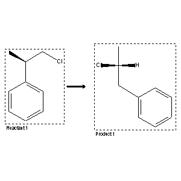

|  |
| FA | RX(1); FLST(1); RX(1) |
Reaction (1 of 1)
| Reaction ID | 3210710 |
| Reactant BRN | 5790438 |
| Reactant | (+)-1-chloro-2-phenylpropane |
| Product BRN | 3195626 |
| Product | (R)-2-chloro-1-phenyl-propane |
| No. of Reaction Details | 1 |
Reaction Details (1 of 1)
| Reaction Classification | Preparation |
| Yield | 70 percent (BRN=3195626) |
| Reagent | FeCl3, dichloroethane |
| Time | 2 hour(s) |
| Temperature | 65 |
| Citation Pointer | 5775405; Journal; Masuda, Shinji; Nakajima, Tadashi; Suga, Sohei; BCSJA8; Bull.Chem.Soc.Jpn.; EN; 56; 4; 1983; 1089-1094; |
Reference (1 of 1)
| Citation Number | 5775405 |
| Document Type | Journal |
| Authors | Masuda, Shinji; Nakajima, Tadashi; Suga, Sohei |
| CODEN | BCSJA8 |
| Journal Title | Bull.Chem.Soc.Jpn. |
| Language Code | EN |
| (Series) Volume | 56 |
| Number | 4 |
| Publication Year | 1983 |
| Page | 1089-1094 |